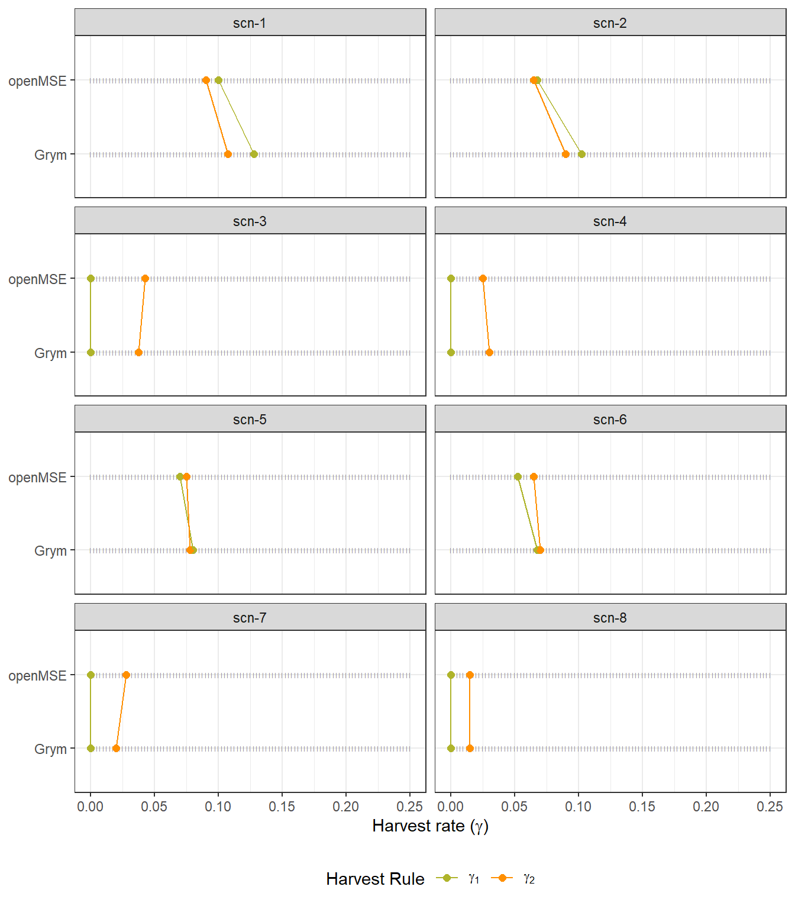

3 openMSE-Grym Approximation
Reproducing the Grym’s base case for the krill fishery using the openMSE framework
3.1 Introduction
In this section, we aim to configure and run the models under the {openMSE} package (Hordyk, Huynh, and Carruthers 2021) to approximate Grym’s base-case implementation for the assessment and management of the Antarctic Krill fishery. Our primary objective for this analysis is to determine whether the openMSE framework can generate estimates of precautionary harvest rates (\(\gamma_p\)) similar to those obtained under the Grym framework, for a range of alternative scenarios involving key stock parameters, as described in Chapter 2. The ability to achieve comparable results will establish the suitability of the openMSE framework to model the population dynamics of the Krill stock, and subsequently, its applicability to evaluate prospective alternative management options for the fishery.
In its essence, like the Grym approach, the openMSE framework is based on an stochastic age-structured population model that simulates fishery dynamics while taking into account uncertainties about stock parameters and system dynamics. This enables the identification of potential management strategies that are robust to a range credible scenarios of the fishery system. Details about the openMSE’s components and features are available on its documentation site.
However, there are fundamental structural differences between the Grym and the openMSE frameworks that may affect the success of the approximation. In the following subsection we describe the main discrepancies between the two approaches in detail.
3.2 Inherent differences between openMSE and Grym
Here we list relevant built-in differences between the Grym’s base-case implementation and the openMSE framework in terms of population model structure.
3.2.1 Temporal Resolution
The openMSE’s population model describes a fished stock and its dynamics at yearly time-steps, whereas Grym represents populations at daily time-steps.
Grym’s daily-based structure allows to model stock characteristics at a day-level resolution, which permits the specification of whithin-year patterns in e.g. growth, spawning, natural and fishing mortality. It also provides the flexibility to evaluate population parameters and reference points at specific periods of the year (e.g. during the spawning season or fishing period).
On the other hand, the openMSE framework is constrained to yearly-level computations and hence it is unable to account for within-year features nor to derive the stock status at particular fractions of the year - reported annual stock quantities are strictly related to the stock status at start of each year.
A concrete example of deviations between the two approaches related to temporal resolution is the calculation of key biomass quantities. In the Grym base-case, yearly \(SSB_y\) and \(SSB_0\) are computed relative to the spawning period, and \(B_0\) is computed for a specific monitoring period. By comparison, under the openMSE dynamics model, these quantities are purely related to the first day of the year.
3.2.2 Stock-Recruitment Relationship
In contrast with the Grym approach, the openMSE framework uses a conventional stock-recruitment model to compute the expected number of recruits given the spawning stock size.
As described in Section 2.1.1, the simulation of recruitment in Grym is assumed to be independent of the stock size, except when the stock falls below a critical depletion point (20% of \(SSB_0\)) in the preceding year. In this scenario, the simulated recruitment is penalized by a reduction factor calculated as the percentage drop from the critical point.
Under the openMSE approach, yearly recruitments are generated as random deviates from a mean recruitment that is dictated by a standard stock-recruitment relationship (the Beverton-Holt or the Ricker curves), which specifies the expected number of recruits at any given stock size. However, unlike Grym, openMSE does not offer the option to penalize recruitment deviates based in depletion levels.
As a result, when the stock falls below critical depletion levels, the strength of simulated recruitment in the two frameworks will tend to diverge, especially under high levels of recruitment variability.
3.2.3 Historical Period
The openMSE tool takes into account for the historical period of the fishery leading up to a current state, before projecting the population forward under potential future management strategies under evaluation. In the Grym base-case implementation, stock projections start from a pre-exploitation state without considering information on historical trends or current status of the fishery.
An obvious way to align the two approaches would be to skip the historical period in the openMSE simulation. However, for the current version of the openMSE, and in particular its {MSEtool} package (vr packageVersion("MSEtool")), a minimum historical period of 5 years is required. Local changes to the {MSEtool} codebase allowed the reduction of the minimum required historical period to 2 years.
Therefore, even when an historical period with no fishing mortality is specified, the openMSE simulations will still have an additional 2-year lead-up period subject to stochasticity, which is not present in the Grym implementation.
3.2.4 Unfished Reference Points Calculation
The Grym approach includes recruitment deviations in the calculation of unfished/pre-exploitation reference points, such as \(SSB_0\) and \(B_0\). The openMSE approach provides similar estimates, referred to as “dynamic unfished reference points”. Under both approaches, these quantities are used to evaluate the status of the stock at different time points of the projection period for each of the management strategies under consideration.
However, there is a key divergence between approaches regarding the estimation of \(SSB_0\). In the Grym approach, \(SSB_0\) is estimated stochastically within each simulation by taking the median of multiple realizations of \(SSB_0\) from repeated samples of initial age structures. In contrast, the openMSE approach computes \(SSB_0\) based on one single random sample of initial age structure generated at each given simulation. Consequently, estimates of \(SSB_0\) under the Grym approach will tend to be more stable (i.e., have a lower variance) across simulations than those calculated in the openMSE approach. This difference could be especially pronounced in situations of high variability in stock parameters, such as natural mortality and recruitment.
3.3 Configuring openMSE
Here we describe how the openMSE components are configured to approximate the estimation of precautionary harvest rates for the krill fishery as it is performed under the Grym base-case implementation1.
The openMSE framework requires the specification of 3 main components to run a Management Strategy Evaluation (MSE):
Operating Model (OM): containing parameters specifying the characteristics of the population and fishery dynamics, as well as parameters required to simulate the collection of data and the implementation of management procedures.
Management Procedure(s) (MP): A MP defines a set of rules specifying how the fishery will be managed during the projection period (e.g. setting a fixed annual total allowable catch, TAC).
Performance Metric(s) (PM): A PM summarises the MSE outputs in order to evaluate the performance of the considered MPs against the management objectives specified for the fisheries, as e.g. the expected level of depletion over the projection period associated with a given MP.
We start off by building OMs for the 8 inputs scenarios under consideration.
3.3.1 Build OMs for input scenarios
As described in Section 2.2.1, input scenarios forming alternative parameter setups for modelling the Krill fishery were generated from combining 4 different PR scenarios with 2 alternative maturity ogive curves. In order to run MSE simulations for each of the considered scenarios, we need to build scenario-specific OMs.
Therefore, OM parameter values were selected to closely approximate the parameter setups used in the Grym analyses presented in Chapter 2. Specifically, for each scenario-specific OM, all OM parameters were held constant except for:
Natural Mortality M, provided as random draws from the fitted PR model associated with the scenario (generated in Chapter 1);
Recruitment Process error Perr, derived from random draws of \(CV_R\), also from the fitted PR model;
maturity-at-length parameters L50 and L50_95 associated with the scenario
The function build_OM_grym_approx() was created to build OMs for the parameters values specified under each input scenario, as follows.
openmse_scen_OMs <- grym_setups |>
select(scenario_id:matrange, t0:Ages, prRecruitPars) |>
rowwise() |>
mutate(
OM = list(
build_OM_grym_approx(
om_name = glue::glue("krill_grym_approx_{scenario_id}"),
maxage = last(Ages), Linf = Linf, K = K, t0 = t0,
mat50Min = mat50Min, mat50Max = mat50Max, matrange = matrange,
sel50Min = sel50Min, sel50Max = sel50Max, selrange = selrange,
a = a, b = b,
M_draws = pull(prRecruitPars, M) , RCV_draws = pull(prRecruitPars, CV),
maxF = Fmax, n_iter = n_iter, proj_yrs = n.years
)
)
) |>
pull(OM)
names(openmse_scen_OMs) <- grym_setups$scenario_id
write_rds(openmse_scen_OMs, "../part1_shared_files/inputs/openmse_scen_OMs.rds")The openMSE framework includes a report generation tool that was used to document in detail the choice of OM parameter values for one of the input scenarios (scn-1), for reference.
# initialize OM report for scn-1
OMinit(name = "OM_krill_grym_approx_scn-1", files = "rmd", overwrite = FALSE)The documentation step is performed externally to this document. Once the OM is appropriately documented, we compile the report. The resultant document can be viewed in Chapter 4.
Due to a bug in MSEtool::OMdoc(), the number of years to project the population forward must be set to 50 years, otherwise the markdown rendering process fails. This issue is exclusive to the OM_doc function.
# changed version of the MSEtool::OMdoc() that solves issues with the inclusion
# of bibliographic references, provides better integration in another document
# as an embedded html. Also adds option to change html theme
source("OMdoc_dmp.r")
# Length of projection must be 50 years, otherwise compilation crashes due to
# bug in OMdoc
OM_to_report <- openmse_scen_OMs$`scn-1`
OM_to_report@proyears <- 50
OMdoc_dmp(
OM = OM_to_report,
openFile = FALSE,
rmd.source = "OM_krill_grym_approx_scn-1.rmd",
bib_file = "../../references.json",
html_theme = "lumen")Relevant choices to approximate the OMs specification to the Grym setups include:
- Set up the historical period to two years (minimum restricted by the basecode).
- Stock assumed to remain unexploited during the historical period.
- Define a range of high values (0.9 - 0.95) for the steepness of the Beverton-Holt stock-recruitment model in order to simulate yearly recruitments that are weakly dependent on stock size, unless when the stock is below 20% of its pre-exploitation size.
- Life-history parameters defining individual growth (i.e. Linf, K, t0, a and b) assumed to be known without error.
- Management procedures assumed to be perfectly implemented, i.e. annual catches never exceed nor fall short of the stipulated TACs.
3.3.2 Define Management Plans
The openMSE framework define Management Plans (MPs) as programmatic functions establishing how the fishery could prospectively be managed, by running a set of calculations and criteria on fishery information and returning management recommendations.
In the context of the openMSE-Grym approximation, and Krill’s current management approach, we want to specify one MP for each of the considered harvest rates \(\gamma\). Thus, each MP establishes a constant harvest rate policy with a recommended fixed annual catch limit of \(\gamma \widehat{B_0}\) throughout the projection period.
As explained in Section 2.1.1, \(\widehat{B_0}\) represents an estimate of pre-exploitation biomass which, similarly to the Grym approach, is simulated here as
\[\widehat{B_0} = B_0 \times \epsilon_{B_0}, \epsilon_{B_0} \sim \textrm{log-Normal}\left(-B0logSD^2/2, B0logSD^2 \right)\]
where the standard deviation \(B0logSD\), conveying the observational error in survey estimates of \(B_0\), is estimated externally from survey data (e.g. Kinzey 2021). The \(\gamma\)-based MPs are set using the estimated dynamic unfished stock biomass (i.e. including recruitment process error) at the end of the historical period, serving as a proxy for the pre-exploitation biomass \(B_0\). This is to approximate the Grym implementation, which incorporates recruitment variability in the estimation of reference points.
Below are the custom functions we developed to generate the \(\gamma\)-based MPs. These functions need to be defined as objects of class MP in order to be used with openMSE’s simulation functions.
# ------------------------------------------------------------------------------
# Custom-made MP for krill based current CCAMLR management: constant TAC as a
# proportion (gamma, i.e. the exploitation rate) of an estimate of
# pre-exploitation biomass (B0)
#
# Note: This is only an approximation to current krill management methods.
# Literature and Grym code point to the use of an estimate of mean B0 at a given
# "monitoring period" - the time of the year in which surveys are typically done
# to estimate B0. Population dynamics in DLMtool follow yearly time-steps, so
# there is no obvious way to derive the B0 for a given time period within the
# year
# core function
#' @param gamma double, the harvest rate that, combined with B0, sets the TAC
#' @param B0err numeric vector of size `nsim`, random draws of errors in B0
#' estimates
gammaB0_ <- function(x, Data, reps = 1, gamma, nyears, B0err){
# create a 'Rec' object
Rec <- new("Rec")
# get the dynamic unfished biomass (i.e., including recruitment deviations) at
# the end of the spool-up/historical period (i.e. last year before first year
# of projection)
B0 <- Data@Misc$ReferencePoints$Dynamic_Unfished$B0[x, nyears]
# Replicating Grym's approach for setting the catch limit, based on a survey
# estimate of B0. So, first generate an estimate of B0, accounting for
# observational error
B0_hat <- B0 * B0err[x]
# Then compute the catch limit recommendation, and assign it to the TAC slot of
# 'Rec'
Rec@TAC <- gamma * B0_hat
# return the 'Rec' object
Rec
}
#' Function to build multiple gamma_B0-based MPs for a choice of gammas. Also
#' passing the number of years in historical simulation and the SD of B0 survey
#' estimates.
#' In MSEtool, each MP must be defined as a unique function, and must be of class "MP"
#' @inheritParams gammaB0_
build_gammaB0 <- function(gammas, nyears, B0err){
purrr::map_chr(gammas, function(x){
# name of the function
fn_name <- paste0("gammaB0_", x)
# function re-definition for the gamma value
fn_def <- purrr::partial(gammaB0_, gamma = !!x, nyears = !!nyears, B0err = !!B0err)
# assign function to name
assign(fn_name, fn_def, envir = .GlobalEnv)
# assign class MP to function
eval(
rlang::call2("<-",
rlang::expr(class(!!rlang::sym(fn_name))), "MP"),
envir = .GlobalEnv
)
# return function name for use in MSE run
fn_name
})
}3.3.3 Set Performance Metrics
Lastly, we must define Performance Metrics (PMs) to evaluate the \(\gamma\)-based MPs under consideration. In the context of Krill management, and as seen in Chapter 2, there are two PMs of interest:
the depletion probability, the probability of \(SSB\) being below 20% of its pre-exploitation level \(SSB_0\) at any year of a 20-year projection period)
Escapement level, the median of simulated \(SSB\) estimates at the end of the projection period relative to the median of simulated \(SSB_0\) estimates
Following the same approach taken in the definition of MPs and in alignment with the Grym implementation, both PM calculations use the estimate of unfished spawning biomass at the end of the historical period as the pre-exploitation spawning biomass \(SSB_0\).
We create two functions, PD() and ESC(), of class PM to formalize these metrics for use within the openMSE package.
# ------------------------------------------------------------------------------
# Performance metrics for krill based on current CCAMLR management (i.e.
# the two decision rules)
## ------------------------- ##
## Depletion Probability ##
## ------------------------- ##
# *Depletion probability*: Probability of lowest spawning biomass over a 20-year
# harvesting period dropping below 20% of its pre-exploitation level
# Following krill's Grym Workshop - the probability that the
# minimum value of SSB over the projection period is less than 20% of SSB0,
# i.e. p[min(SSB)/SSB0 < 0.2]
PD <- function (MSEobj = NULL, Ref = 0.2, Yrs = 20){
Yrs <- ChkYrs(Yrs, MSEobj)
PMobj <- new("PMobj")
PMobj@Name <- "Depletion: Lowest Spawning Biomass relative to SSB0"
if (Ref != 1) {
PMobj@Caption <- paste0("Prob. min(SSB) < ", Ref, " SSB0 (Years ",
Yrs[1], " - ", Yrs[2], ")")
}
else {
PMobj@Caption <- paste0("Prob. min(SSB) < SSB0 (Years ", Yrs[1], " - ",
Yrs[2], ")")
}
PMobj@Ref <- Ref
# get lowest SSB over the selected window of the projection period, for each
# simulation and MP
if (MSEobj@nMPs > 1) mar <- 2 else mar <- 1
mar <- 1:mar
SSB_lowest <- apply(MSEobj@SSB[ , , Yrs[1]:Yrs[2]], mar, min, na.rm = TRUE)
# step required to conform with PMobj@Stat requirements
if(MSEobj@nMPs == 1){
SSB_lowest <- array(SSB_lowest, dim = c(MSEobj@nsim, 1))
}
# Using the unfished dynamics estimate of SB at the end of the historical
# period as a proxy for pre-exploitation SB
PMobj@Stat <- SSB_lowest/MSEobj@RefPoint$Dynamic_Unfished$SSB0[, MSEobj@nyears]
PMobj@Prob <- PMobj@Stat < PMobj@Ref
PMobj@Mean <- calcMean(PMobj@Prob)
PMobj@MPs <- MSEobj@MPs
PMobj
}
class(PD) <- "PM"
## --------------------- ##
## Escapement in SSB ##
## --------------------- ##
# Escapement: median SSB at end of a 20-year harvesting period relative to
# median SSB0, i.e. median(SSBF)/median(SSB0)
# Escapement Rule: median escapement at the end of a 20 year period is 75% of
# the median pre-exploitation level
ESC <- function (MSEobj = NULL, Ref = 1, Yrs = 20){
Yrs <- ChkYrs(Yrs, MSEobj)
PMobj <- new("PMobj")
PMobj@Name <- "Escapement: Final Spawning Biomass relative to SSB0"
PMobj@Caption <- paste0("median(SSB at Year ", Yrs[2], ")/median(SSB0)")
PMobj@Ref <- Ref
# derive median SSB0 over all simulations - using the unfished dynamics SB at
# the end of the historical period as a proxy for pre-exploitation SB
SSB0_med <- median(MSEobj@RefPoint$Dynamic_Unfished$SSB0[, MSEobj@nyears])
# Select SSB in final year of the selected window
PMobj@Stat <- MSEobj@SSB[, , Yrs[2], drop = FALSE]
# since size of 3rd dimension is 1 (last year only), calProb merely simplifies
# array
PMobj@Prob <- calcProb(PMobj@Stat, MSEobj)
PMobj@Mean <- apply(PMobj@Stat, 2, median)/SSB0_med
PMobj@MPs <- MSEobj@MPs
PMobj
}
class(ESC) <- "PM"
3.4 Run MSE Simulations
With all the necessary components specified for the openMSE framework, we are now ready to run the MSE simulations for each of the scenario-specific OMs defined above.
Due to the large number of simulations (10k) and the extensive quantity of \(\gamma\)-based MPs involved in each MSE run, we use the “slice-apply-combine” parallelization feature available on the main function MSEtool::runMSE() to speed up computations.
Code
# Note: runtime is substantial (~2.5 days across 20 cores), so we don't want to run
# this chunk on rendering!
openmse_scen_OMs |>
imap(\(x, y){
cli::cli_h1("Starting MSE run for {y} @ {Sys.time()}")
# Simulate observational errors in survey estimates of B0. `B0logsd` is the
# SD of survey estimates of (log) B0 conveying the observational error in
# surveys, assumed to be log-Normally distributed. `B0logsd` is calculated
# externally from survey data.
b0lgsd <- grym_setups |> filter(scenario_id == y) |> pull(B0logsd)
B0err_draws <- rlnorm(x@nsim, -b0lgsd^2/2, b0lgsd)
# build MPs for considered gammas
gammas <- grym_setups |> filter(scenario_id == y) |> pull(gamma) |> pluck(1)
gamma_B0_MPs <- build_gammaB0(
gammas = gammas,
nyears = x@nyears,
B0err = B0err_draws)
# run MSE for current scenario
tictoc::tic()
mse_output <- runMSE(OM = x, MPs = gamma_B0_MPs, parallel = "sac")
runtime <- tictoc::toc(quiet = TRUE)
# write out mse outputs
write_rds(
mse_output,
file = fs::path(model_outputs_path, glue::glue("openmse_mse_outputs_{y}.rds")),
compress = "gz"
)
cli::cli_alert_success("Finished MSE for {y}: {runtime$callback_msg}")
})Next we extract the most relevant outputs from the MSE simulations, while also computing the precautionary harvest rate \(\gamma_p\) for each input scenario. As described in Section 2.1, \(\gamma_p\) is derived based on the three-step decision rule involving the depletion probability and escapement performance metrics.
Code
# ------------------------------------------------------------------------------
# Utility function to extract relevant results and perform gammas selection
# ------------------------------------------------------------------------------
mse_extract_gammas <- function(mseObj_file, SSB0_type = "equilibrium"){
cli::cli_alert("\n Processing file {mseObj_file} @ {Sys.time()}")
mse_out <- read_rds(mseObj_file)
# SSB0 data and source metrics functions, based on choice of type of reference point
if(SSB0_type == "equilibrium"){
SSB0 <- mse_out@OM$SSB0
source("part1_openMSE_GRYM_approx/3_openMSE_sims/krill_mngnt_ccamlr_metrics_equilibrium.R")
}else
if(SSB0_type == "dyn_unfished"){
SSB0 <- mse_out@RefPoint$Dynamic_Unfished$SSB0[, mse_out@nyears]
source("part1_openMSE_GRYM_approx/3_openMSE_sims/krill_mngnt_ccamlr_metrics_dynamic.R")
}
# get considered gammas
gammas <- as.numeric(str_replace(mse_out@MPs, "gammaB0_", ""))
# extract projected SSB and cast it into a dataframe
dimnames(mse_out@SSB) <- list(sim = 1:mse_out@nsim, gamma = gammas, Year = 1:mse_out@proyears)
ssb_proj <- reshape2::melt(mse_out@SSB, value.name = "SSB") |> as_tibble()
ssb0 <- tibble(
sim = 1:mse_out@nsim,
SSB0 = SSB0
)
# merge in SSB0, calculate yearly spawning stock status (SSS), and identify
# simulations where SSS < 0.2 at any point in the time-series
ssb_proj <- left_join(ssb_proj, ssb0, by = "sim") |>
group_by(sim, gamma) |>
mutate(
SSS = SSB/SSB0,
below_dpl = if_else(min(SSS) < 0.2, TRUE, FALSE)
) |>
ungroup()
# Compute depletion metric for each gamma
dep_metric <- PD(mse_out)
# Compute escapement metric for each gamma
esc_metric <- ESC(mse_out)
mse_metrics <- tibble(gamma = gammas, PD = dep_metric@Mean, ESC = esc_metric@Mean)
# Derive gammas that satisfy the depletion and the escapement rules, and the
# final gamma_p as min(gamma_1, gamma_2)
gamma_results <- mse_metrics |>
summarise(
gamma1 = max(max(gamma[PD <= 0.1]), 0),
gamma1_approx = approx(PD, gamma, 0.1)$y,
gamma2 = max(gamma[ESC >= 0.75]),
gamma2_approx = approx(ESC, gamma, 0.75)$y
) |>
mutate(selected_gamma = if_else(gamma1 < gamma2, 1, 2))
# return results in tibble with list-columns
tibble(
ssb_proj = list(ssb_proj), dep_metric = list(dep_metric),
esc_metric = list(esc_metric), mse_metrics = list(mse_metrics),
gamma_results = list(gamma_results)
)
}
# -------------------------------------------------------------------------------
# -- Results and gammas for unfished dynamics SSB0 and dynamic B0
openmse_2yrhst_dynB0_dynSSB0_scen <- fs::dir_ls(model_outputs_path, regexp = "scn") |>
map_df(~mse_extract_gammas(.x, SSB0_type = "dyn_unfished"), .id = "fname") |>
mutate(scen_id = str_extract(fname, "scn-\\d+"), .before = 1, .keep = "unused")
# -- write out selected gammas
openmse_2yrhst_dynB0_dynSSB0_scen |>
select(scen_id, gamma_results) |>
unnest(gamma_results) |>
select(-contains("approx")) |>
write_rds(
file = fs::path(results_path, "openmse_2yrhst_dynB0_dynSSB0_scen_gamma_select.rds")
)
# -- write out performance metrics
openmse_2yrhst_dynB0_dynSSB0_scen |>
select(scen_id, mse_metrics) |>
unnest(mse_metrics) |>
write_rds(file = fs::path(results_path, "openmse_2yrhst_dynB0_dynSSB0_scen_metrics.rds"))
# -- write out simulated SSB trajectories under all scenarios
openmse_2yrhst_dynB0_dynSSB0_scen |>
select(scen_id, ssb_proj) |>
unnest(ssb_proj) |>
write_rds(file = fs::path(results_path, "openmse_2yrhst_dynB0_dynSSB0_scen_ssb.rds"),
compress = "gz"
)3.5 Results
Code
# ----------------------------
# Read-in relevant outputs
# ----------------------------
# import scenario key
scenarios_key <- read_rds("../part1_shared_files/inputs/scenarios_key.rds") |>
rename(scen_id = scenario_id)
# read in grym projections under each scenario, for a subset of gamma
grym_scen_outputs_sub <- read_rds("../part1_shared_files/outputs/grym/grym_scen_outputs_sub.rds")
# subset of gammas to display in plots
gamma_subset <- unique(grym_scen_outputs_sub$Gamma)
# Grym gamma estimates
grym_gammas_tbl <- read_rds("../part1_shared_files/outputs/grym/grym_gammas_tbl.rds") |>
mutate(across(-scenario_id, as.numeric)) |>
mutate(across(c(Gamma_1, Gamma_2), ~if_else(is.infinite(.), 0, .))) |>
rename(scen_id = scenario_id, gamma1 = Gamma_1, gamma2 = Gamma_2, selected_gamma = Gamma_choice)
# openmse
openmse_scen_metrics <- read_rds(
fs::path(results_path, "openmse_2yrhst_dynB0_dynSSB0_scen_metrics.rds")
#fs::path(results_path, "openmse_100yrhst_dynB0_dynSSB0med_scen_metrics.rds")
)
# open mse gamma estimates
openmse_scen_gamma_select <- read_rds(
fs::path(results_path, "openmse_2yrhst_dynB0_dynSSB0_scen_gamma_select.rds")
#fs::path(results_path, "openmse_100yrhst_dynB0_dynSSB0med_scen_gamma_select.rds")
)3.5.1 Spawning stock trajectories
Simulated trajectories of spawning Stock Status (\(SSS\)) across the projecting period are presented in Figure 3.1. As expected, trajectories show an increasing proportion of simulations in which \(SSB\) drops bellow 20% of \(SSB_0\) as the level of harvesting \(\gamma\) increases. Consistent with the Grym analysis (Figure 2.1), there is greater variability in the \(SSS\) trajectories across simulations in scenarios scen-3 to scen-8, reflecting the higher variance in simulated recruitment and natural mortality in those scenarios. Consequently, a substantial portion of simulations show stock depletion levels falling below the critical 20% threshold at low levels of fishing pressure (including when fishing is not present, i.e. \(\gamma = 0\)).
Code
# plots of simulated SSS across years, for each scenario under a subset of gammas
# SSS trajectories that go below 0.2 are signaled in green
p <- openmse_scen_ssb |>
filter(gamma %in% gamma_subset) |>
ggplot(aes(x = Year, y = SSS, group = sim)) +
geom_path(
data = ~filter(.x, below_dpl == FALSE),
alpha = 0.8,
color = "gray75",
linewidth = 0.3
) +
geom_path(
data = ~filter(.x, below_dpl == TRUE),
alpha = 0.8,
color = frmwk_colours["openMSE"],
linewidth = 0.3
) +
geom_hline(yintercept = c(0.2), linetype = "dashed") +
scale_y_sqrt() +
guides(colour="none") +
labs(y = expression(paste("Spawning stock status (SSB/", SSB[0], ")"))) +
facet_grid(rows = vars(scen_id), cols = vars(gamma), scales = "free_y")
ggsave(
plot = p,
filename = "../part1_shared_files/outputs/openmse/openmse_fig_SSS_trajectories_gammas_scens.png",
#filename = "../part1_shared_files/outputs/openmse/openmse_fig_SSS_trajectories_gammas_scens_2.png",
width = 8,
height = 9
)Figure 3.2 compares the distributions of simulated spawning stock biomass at a two time points: before exploitation (Year 0, \(SSB_0)\) and after a 20-year period of harvesting (\(SSB_Y\)). The comparison is shown for a selection of annual harvest rates \(\gamma\) considered in the analysis. As expected, the decline of \(SSB_Y\) relative to \(SSB_0\) becomes more pronounced as the value of \(\gamma\) increases.
In line with the Grym analysis, plots in Figure 3.2 also highlight the effects of high variability in recruitment and natural mortality in projected stock escapement levels. Simulations conducted under scenarios scn-3 to scn-8, which are based on Proportional Recruitment estimates yielding higher variance in simulated values of \(M\) and \(R\), return median \(SSB_Y\) estimates that are below 75% of the median \(SSB_0\) at lower \(\gamma\) values, in contrast to simulations conducted under scenarios scn-1 and scn-2.
Code
# get simulated values of SSB0 and SSB in final year of the projection
spawners <- openmse_scen_ssb |>
filter(
gamma %in% gamma_subset,
Year %in% max(Year)
) |>
select(scen_id, sim, gamma, SSB, SSB0) |>
pivot_longer(cols = c(SSB , SSB0), names_to = "metric") |>
mutate(
metric = if_else(metric == "SSB", "SSBY", metric),
Year = if_else(metric == "SSBY", "20", "0")
)
# compute medians SSB0 and SSB across all simulations , under each scenario
med_spawners <- spawners |>
group_by(scen_id, metric, Year, gamma) |>
summarise(medians = median(value), .groups = "drop")
# Compute escapement threshold value, i.e. 75% of median SSB0)
# Note: values are constant across gammas, as simulated SSB0s are held constant
# across gamma-specific projections.
esc_thresh <- med_spawners |>
filter(metric == "SSB0") |>
mutate(esc_thrs = medians*0.75)
p2 <- spawners |>
ggplot(aes(x = Year, y = value)) +
ggdist::stat_interval() +
geom_point(data = med_spawners, aes(y = medians)) +
geom_hline(data = esc_thresh, aes(yintercept = esc_thrs), linetype = "dashed") +
facet_grid(scen_id ~ gamma, scales = "free") +
labs(y = "Spawning Biomass" ) +
scale_color_brewer(palette = "Blues", name = "Quantile Interval (prob)") +
theme(legend.position="bottom")
ggsave(
plot = p2,
filename = "../part1_shared_files/outputs/openmse/openmse_SSB0_SSBY_dstbn_scens.png",
#filename = "../part1_shared_files/outputs/openmse/openmse_SSB0_SSBY_dstbn_scens_2.png",
width = 8,
height = 9
)3.5.2 Depletion probability and Escapement levels versus \(\gamma\) values
An overall view of the potential impact of various fixed annual harvest rates on the health of the stock, measured in terms of depletion probability and escapement levels, is shown in Figure 3.3. Main findings follow broadly those found in the Grym analysis, e.g.:
For scenarios scn-3, scn-4, scn-7 and scn-8, probability of depletion would be substantially above the 10% critical limit even in the absence of fishing (i.e. \(\gamma = 0\)). In the remaining scenarios, depletion probability would remain under the 10% critical limit for \(\gamma\) values up to approximately 0.05 (scn-6) and 0.1 (scn-1).
\(\gamma\) values at which the stock is maintained at escapement levels above the critical 75% threshold also vary markedly between input scenarios. Scenario scn-8 simulates a stock with high vulnerability to fishing pressure, only able to sustain escapement levels above the critical point for harvest rates up to 1.5% of \(B_0\). On the other hand, under scenario scn-1, simulations suggest that the stock would remain above 75% escapement levels if the harvest rates are kept at least below 8% of \(B_0\).
Plots also show the effect of using alternative maturity ogives in the simulations, as evidenced by the separation between the pairs of scenarios scn-1 & scn-2, scn-3 & scn-4, etc. In comparison with scenarios under the maturity ogive mat-2021, those using the mat-2010 maturity ogive (scn-1, scn-3, scn-5, and scn-7) would cope with higher levels of \(\gamma\) before dropping into unsustainable levels of depletion risk and escapement.
Code
# Plot for depletion probability under considered gammas
p_dpl <- plot_gammas_vs_rule(
dt = openmse_scen_metrics,
gamma = gamma,
rule_value = PD,
scen = scen_id,
thresh = 0.1,
ylab = "Pr[min(SSB/SSB0) < 0.2] (Years 1 - 20)",
xlab = expression(gamma),
title = "Depletion",
scen_label = "Scenario ID"
)
# Plot for escapement level under considered gammas
p_esc <- plot_gammas_vs_rule(
dt = openmse_scen_metrics,
gamma = gamma,
rule_value = ESC,
scen = scen_id,
thresh = 0.75,
title = "Escapement",
ylab = "med(SSB)/med(SSB0) in Final Year",
xlab = expression(gamma),
scen_label = "Scenario ID"
)
p_dpl/p_esc + plot_layout(guides = 'collect')3.5.3 Estimated \(\gamma_p\) under each input scenario
Table 3.1 shows the precautionary harvest rate \(\gamma_p\) estimated under the openMSE framework for each input scenario based on the 3-stage decision rule (Section 2.1).
Similarly to the results obtained under the Grym approach, the magnitude of \(\gamma_p\) estimates across the considered input scenarios is strongly influenced by the chosen Proportional Recruitment scenario. Scenarios using PR estimates reflecting lower variability and uncertainty in yearly recruitment (\(R\)) and \(M\) (scn-1 & scn-2 under PR-emm21) produced the highest estimates \(\gamma_p\), based on the escapement rule (\(\gamma_2\)). In contrast, scn-3, scn-4, scn-7 and scn-8, using PR estimates conveying the highest variability in \(R\) (PR-amlr and PR-amlr-haul), returned \(\gamma_p\) estimates of 0 based on the depletion rule (\(\gamma_1\)). Therefore, under these scenarios, current management objectives would not be satisfied even in the absence of fishing.
The effect of maturity-at-length on \(\gamma_p\) estimates is also evident, with scenarios employing the mat-2021 ogive yielding lower estimates of \(\gamma_p\) compared to scenarios using the mat-2010 ogive. Under the mat-2021 ogive, the relatively higher proportion of immatures being vulnerable to fishing accelerates the decline of \(SSB\) from \(SSB_0\), returning more conservative \(\gamma_p\) estimates.
Code
# gammas in math format
gamma_symb <- c("\\gamma_1", "\\gamma_2", "\\gamma_p")
openmse_scen_gamma_select |>
select(-contains("approx")) |>
mutate(across(-scen_id, as.numeric)) |>
mutate(across(c(gamma1, gamma2), ~if_else(is.infinite(.), 0, .))) |>
left_join(scenarios_key, by = "scen_id") |>
relocate(gamma1:selected_gamma, .after = last_col()) |>
mutate(gamma_p = pmin(gamma1, gamma2)) |>
select(-selected_gamma) |>
flextable() |>
set_table_properties(width = 0.8, layout = "autofit") |>
#bold(j = ~ gamma_p) |>
bold(j = ~ gamma1, i = ~ gamma1 < gamma2) |>
bold(j = ~ gamma2, i = ~ gamma2 < gamma1) |>
vline(j = ~ gamma2, border = fp_border_default(width = .5)) |>
bg(j = ~ gamma_p, bg = "#E1F5FE", part = "all") |>
set_header_labels(
scenario_id = "Scenario ID",
pr_scen_id = "PR Scenario ID",
mat_scen_id = "Maturity ID"
) |>
width(j = ~ gamma1 + gamma2 + gamma_p, width = 10) |>
compose(j = ~ gamma1 + gamma2 + gamma_p,
part = "header",
value = as_paragraph(as_equation(gamma_symb))) |>
align(j = ~ gamma1 + gamma2 + gamma_p, align = "center")scen_id | PR Scenario ID | Maturity ID |
|
|
|
|---|---|---|---|---|---|
scn-1 | PR-emm21 | mat-2010 | 0.1000 | 0.0900 | 0.0900 |
scn-2 | PR-emm21 | mat-2021 | 0.0675 | 0.0650 | 0.0650 |
scn-3 | PR-amlr | mat-2010 | 0.0000 | 0.0425 | 0.0000 |
scn-4 | PR-amlr | mat-2021 | 0.0000 | 0.0250 | 0.0000 |
scn-5 | PR-atlantida | mat-2010 | 0.0700 | 0.0750 | 0.0700 |
scn-6 | PR-atlantida | mat-2021 | 0.0525 | 0.0650 | 0.0525 |
scn-7 | PR-amlr-haul | mat-2010 | 0.0000 | 0.0275 | 0.0000 |
scn-8 | PR-amlr-haul | mat-2021 | 0.0000 | 0.0150 | 0.0000 |
3.5.4 Comparison between Grym and openMSE results
Projections of spawning stock status (\(SSS\)) simulated under the Grym implementation (obtained in Chapter 2) and the openMSE approach, for the considered input scenarios, are compared in Figure 3.4 and Figure 3.5. Key findings include:
OpenMSE simulations demonstrate higher variability (i.e. greater uncertainty) in the annual \(SSS\) estimates compared to the Grym approach. This is evident from the wider 90% quantile intervals observed in the openMSE results.
The difference in dispersion between the two frameworks is more pronounced in scenarios scn-3, scn-4, scn-7 & scn-8, which are characterized by PR estimates with higher variability in \(R\).
Moreover, for scenarios scn-3, scn-4, scn-7 & scn-8, dispersion levels estimated by the Grym implementation tend to decrease over the projection period at higher \(\gamma\) values, while dispersion remains stable in the openMSE simulations. This discrepancy may be attributed to the recruitment depletion penalization applied in Grym, which is not incorporated in the openMSE implementation (see Section 3.2.2).
Similarity between the two frameworks in terms of median annual \(SSS\) is primarily determined by the chosen PR scenario. For instance, in scenarios scn-1 and scn-2 (under PR-emm21), the two implementations return matching trajectories of median \(SSS\) up to harvest rates of \(\gamma = 0.05\), while for scn-5 and scn-6 (under PR-atlantida) the proximity in trajectories extends to harvest rates up to \(\gamma = 0.12\). However, in the remaining scenarios (under PR-amlr and PR-amlr-haul), the separation between the two frameworks occurs at lower harvest rates.
The impact of the recruitment depletion penalization is also evident in the median \(SSS\) trajectories in scenarios scn-3, scn-4, scn-7 & scn-8, where the decay in the projected median \(SSS\) is faster under the Grym approach.
- The degree of impact of alternative maturity ogives on median \(SSS\) projections appears to vary between frameworks as well. The differences in trajectories between scenarios using contrasting maturity ogives (e.g. scn-1 & scn-2, scn-3 & scn-4, etc) are more pronounced under the openMSE approach. This discrepancy is likely attributed to the difference in the computation of \(SSB\) between the two frameworks. Grym calculates \(SSB\) at a specific fraction of the year (“Spawning season”: days 76 to 138; Table 2.2) during which the stock biomass peaks due to peak individual growth. As a result, Grym tends to produce higher estimates of \(SSB\) compared to the openMSE implementation, which estimates \(SSB\) at the start of the year.
Code
grym_scen_SSS <- grym_scen_outputs_sub |>
rename(scen_id = scenario_id, sim = Run, gamma = Gamma) |>
select(scen_id, sim, gamma, Year, SSS) |>
mutate(Framework = "Grym") |>
filter(Year != 0)
openmse_scen_SSS <- openmse_scen_ssb |>
filter(gamma %in% gamma_subset) |>
select(scen_id, sim, gamma, Year, SSS) |>
mutate(Framework = "openMSE")
frmwk_scen_SSS <- bind_rows(grym_scen_SSS, openmse_scen_SSS)
# Plot projections of spawning stock status under each gamma, across input
# scenarios
p_SSS_proj_frmwk <- frmwk_scen_SSS |>
#filter(scen_id == "scn-1", gamma == 0) |>
group_by(scen_id, Year, gamma, Framework) |>
median_qi(SSS, .width = 0.9) |>
ggplot(aes(x = Year, y = SSS, fill = Framework, color = Framework)) +
geom_lineribbon(aes(ymin = .lower, ymax = .upper), alpha = 1/3, linewidth = 0.3) +
geom_line(linewidth = 0.3) +
scale_fill_manual(values = frmwk_colours) +
scale_colour_manual(values = frmwk_colours) +
facet_grid(scen_id ~ gamma, scales = "free") +
labs(y = expression(paste("Spawning stock status (SSB/", SSB[0], ")"))) +
theme(legend.position="bottom")
ggsave(
plot = p_SSS_proj_frmwk,
filename = "../part1_shared_files/outputs/plot_openMSE_vs_Grym_SSS_traject_scens.png",
#filename = "../part1_shared_files/outputs/plot_openMSE_vs_Grym_SSS_traject_scens_2.png",
width = 8,
height = 11
)
p_med_SSS_proj_frmwk <- frmwk_scen_SSS |>
#filter(scen_id == "scn-1", gamma == 0) |>
group_by(scen_id, Year, gamma, Framework) |>
summarise(med_SSS = median(SSS), .groups = "keep") |>
ggplot(aes(x = Year, y = med_SSS, colour = Framework)) +
geom_line() +
scale_colour_manual(values = frmwk_colours) +
facet_grid(scen_id ~ gamma, scales = "fixed") +
labs(y = expression(paste("Spawning stock status (SSB/", SSB[0], ")"))) +
theme(legend.position="bottom")
ggsave(
plot = p_med_SSS_proj_frmwk,
filename = "../part1_shared_files/outputs/plot_openMSE_vs_Grym_med_SSS_traject_scens.png",
#filename = "../part1_shared_files/outputs/plot_openMSE_vs_Grym_med_SSS_traject_scens_2.png",
width = 8,
height = 8
)The estimated harvest rates satisfying the depletion (\(\gamma_1\)) and escapement (\(\gamma_2\)) decision rules are compared between the two frameworks in Figure 3.6.
In general, the openMSE implementation tends to produce estimates of \(\gamma_1\) and \(\gamma_2\) that are either slightly lower (scn-1, scn-2, scn-5 and scn-6) or identical (scn-4 and scn-8) to those estimated by the Grym implementation. For scenarios scn-3 and scn-7, the estimates of \(\gamma_2\) obtained in openMSE are marginally higher than those obtained in Grym. This reflects the faster decline in median \(SSS\) trajectories under Grym, as observed and discussed in Figure 3.5.
There is no clear pattern regarding the impact of alternative maturity ogives on \(\gamma_1\) and \(\gamma_2\) estimates from the two frameworks.
Code
openmse_gammas_est <- openmse_scen_gamma_select |>
mutate(Framework = "openMSE")
grym_gammas_est <- grym_gammas_tbl |>
mutate(Framework = "Grym")
frmwk_gammas_est <- bind_rows(openmse_gammas_est, grym_gammas_est)
gamma_support_tbl <- expand_grid(
Framework = c("openMSE", "Grym"),
gamma = grym_setups$gamma[[1]]
)
frmwk_gammas_est |>
pivot_longer(cols = c(gamma1, gamma2), names_to = "gamma_type") |>
ggplot(aes(x = Framework, y = value)) +
#geom_point(data = gamma_support_tbl, aes(x = Framework, y = gamma), size = 0.5, color = "gray80") +
geom_point(data = gamma_support_tbl, aes(x = Framework, y = gamma), size = 1, color = "gray50", shape = "|") +
geom_point(aes(color = gamma_type, group = gamma_type), size = 2) +
geom_line(aes(color = gamma_type, group = gamma_type)) +
labs(
y = expression(paste("Harvest rate (", gamma, ")")),
x = NULL,
color = expression(paste("Type of ", gamma))
) +
scale_colour_manual(values = c("#AFB42B", "#FF8F00"), name = "Harvest Rule",
labels = expression(gamma[1], gamma[2])) +
facet_wrap(~scen_id, ncol = 2) +
theme(legend.position="bottom") +
coord_flip()
Therefore, and considering the estimates of precautionary harvest rates presented in Table 3.2, results indicate a reasonable level of agreement between the two approaches across the considered input scenarios. The implemented openMSE-Grym approximation is capable of producing estimates of \(\gamma_p\) that are either identical or within a range of 1.25 - 2.25 percentage points lower than those obtained under the Grym’s base-case implementation.
Code
gamma_symb <- c("\\gamma_p^{openMSE}", "\\gamma_p^{Grym}")
frmwk_gammas_est |>
group_by(scen_id, Framework) |>
mutate(gamma_p = pmin(gamma1, gamma2)) |>
pivot_wider(id_cols = scen_id,names_from = Framework, values_from = gamma_p) |>
left_join(scenarios_key, by = "scen_id") |>
relocate(pr_scen_id:mat_scen_id, .after = scen_id) |>
flextable() |>
set_table_properties(width = 0.75, layout = "autofit") |>
set_header_labels(
scenario_id = "Scenario ID",
pr_scen_id = "PR Scenario ID",
mat_scen_id = "Maturity ID"
) |>
compose(j = ~ openMSE + Grym,
part = "header",
value = as_paragraph(as_equation(gamma_symb))) |>
align(j = ~ openMSE + Grym, align = "center")scen_id | PR Scenario ID | Maturity ID |
|
|
|---|---|---|---|---|
scn-1 | PR-emm21 | mat-2010 | 0.0900 | 0.1075 |
scn-2 | PR-emm21 | mat-2021 | 0.0650 | 0.0900 |
scn-3 | PR-amlr | mat-2010 | 0.0000 | 0.0000 |
scn-4 | PR-amlr | mat-2021 | 0.0000 | 0.0000 |
scn-5 | PR-atlantida | mat-2010 | 0.0700 | 0.0775 |
scn-6 | PR-atlantida | mat-2021 | 0.0525 | 0.0675 |
scn-7 | PR-amlr-haul | mat-2010 | 0.0000 | 0.0000 |
scn-8 | PR-amlr-haul | mat-2021 | 0.0000 | 0.0000 |
3.6 Discussion
The main objective of this analysis was to replicate the estimation of precautionary harvest rates for the Antarctic Krill, as currently performed under the Grym framework (D. Maschette et al. 2020; D. Maschette et al. 2021), using the R package {openMSE} (Hordyk, Huynh, and Carruthers 2021). In order to achieve this, the components of openMSE (i.e. Operating Model, Management Procedures and Performance Metrics) were configured to approximate the modelling features of the Grym approach, as specified in CCAMLR’s base-case implementation for the Krill fishery. The effectiveness of the approximation was assessed by applying the openMSE implementation across a set of eight model input scenarios. These scenarios were designed to capture variations in Proportional Recruitment estimates (i.e. natural mortality, \(M\), and recruitment variability, \(CV_R\)), as well as alternative maturity ogive curves. Each of these scenarios were also used in Grym simulations in a concurrent analysis (Chapter 2). By comparing the results obtained from openMSE with those from Grym under the same set of scenarios, we can examine the suitability of the openMSE framework to the Krill fishery.
Results revealed that the implemented openMSE approximation was able to generate estimates of precautionary harvest rates \(\gamma_p\) that were either identical or reasonably close to those obtained under the Grym implementation, for the considered input scenarios. Discrepancies in the \(\gamma_p\) estimates, as well as in the inherent estimates of harvest rates satisfying the depletion (\(\gamma_1\)) and the escapement (\(\gamma_2\)) rules, suggest that the openMSE approximation tends to yield slightly more conservative harvest rates than the Grym approach.
Discrepancies observed in results are likely due to fundamental structural differences between the two frameworks (see Section 3.2) that could not be addressed in the present analysis. For example, the absence of the recruitment depletion factor, the additional 2-year historical period under stochasticity, and the difference in the estimation of \(SSB_0\) are all contributing factors for higher variability in openMSE simulations, increasing the chances of stock depletion falling below the critical threshold level and consequently leading to lower estimates of \(\gamma_1\). On the other hand, openMSE is unable to approximate fine-scale temporal dynamics required for the calculation of key stock parameters at specific fractions of the year. For instance, Grym estimates \(SSB\) specifically for the spawning season which, given the growth period under assumption, results in higher \(SSB\) estimates compared to those calculated at the start of the year, as is the case with an annual model like openMSE. Consequently, Grym projections tend to return higher levels of escapement for the same level of exploitation, leading to higher estimates of \(\gamma_2\).
The openMSE framework is still under active development, and it is possible that some of the missing Grym features could be incorporated with relative ease. However, increasing the temporal resolution to sub-year levels poses a significant technical challenge that would require substantial effort and development to implement.
The key strength of the openMSE framework is its capability to provide a comprehensive infrastructure to explore, evaluate and compare the performance of alternative management strategies. Furthermore, through its core package {DLMtool} (Carruthers and Hordyk 2018), openMSE offers a range of Management Strategies tailored for data-limited populations, further enhancing its applicability to the Antarctic Krill fishery.
This analysis demonstrates that the implemented openMSE approximation is able to produce results that are fairly aligned with those obtained under the modelling framework currently adopted for the management of the Krill fishery. These findings instill confidence in the validity and reliability of the openMSE framework for conducting Management Strategy Evaluation (MSE) analysis for the Antarctic Krill.
Which is what we focus on next!
3.7 Supplementary Code
3.7.1 Operating Model builder function
#' ------------------------------------------------------------------------------
#' Build OM object that approximates Krill's Grym base case implementation
#' ------------------------------------------------------------------------------
#'
#' This function allows to create Operating Models configured to approximate the
#' base case of krill fishery assessment implemented under the Grym framework
#' (https://github.com/ccamlr/Grym_Base_Case/tree/Simulations)
#'
#' Within the Grym-approximated configuration, the function allows to specifying
#' alternative input values for stock parameters such as M, maturity,
#' selectivity, etc. In this way, it is a convenience function to generate
#' multiple OMs for alternative input scenarios.
#'
#' The two OM components that are configurable are the 'Stock' and 'Fleet'
#' objects
#'
#' --------------------------------------------------------------------------------
build_OM_grym_approx <- function(om_name, maxage,
Linf, K, t0, mat50Min, mat50Max, matrange,
sel50Min, sel50Max, selrange, a, b,
M_draws, RCV_draws,
n_iter, proj_yrs, maxF, seed = 1001){
require(openMSE)
# ---------------------------------- #
# Stock Object
# ---------------------------------- #
# class?Stock
krill_stock <- new("Stock")
krill_stock@Name <- "krill_stock"
krill_stock@Common_Name <- "Antarctic Krill"
krill_stock@Species <- "Euphausia superba"
# krill assumed to not live past 7 years-old
krill_stock@maxage <- maxage
# arbitrary value number of individuals of age-0 recruitment to the population
krill_stock@R0 <- 1
# M undefined as it will be provided as random draws via `cpars`
krill_stock@M <- numeric(0)
# M constant over time
krill_stock@Msd <- 0
# approximation to Grym approach, where simulated recruitment is reduced when
# population falls below depletion levels (i.e. SSB = 0.2 x SSB0)
krill_stock@h <- c(0.90, 0.95)
# Beverton Holt relationship
krill_stock@SRrel <- 1
# M undefined as it will be provided as random draws via the `cpars` slot
krill_stock@Perr <- numeric(0)
# no autocorrelation between consecutive recruitments
krill_stock@AC <- c(0, 0)
# l@a - Linf assumed as known, as in Grym, from Constable and de la Mare (1996)
krill_stock@Linf <- c(Linf, Linf)
# l@a - no inter-annual variation in Linf
krill_stock@Linfsd <- c(0, 0)
# l@a - k assumed as known, as in Grym, from Thanassekos et al (2021)
krill_stock@K <- c(K, K)
# l@a - no inter-annual variation in k
krill_stock@Ksd <- c(0, 0)
# l@a - t0 assumed as known, as in Grym, from Thanassekos et al (2021)
krill_stock@t0 <- c(t0, t0)
# l@a - low variation in length-at-age, assumed as known
krill_stock@LenCV <- c(0.01, 0.01)
# m@l - mid-point of maturity-at-size, from Maschette et al. (2021)
krill_stock@L50 <- c(mat50Min, mat50Max)
# m@l - Difference in lengths between 50% and 95% maturity - based on width of ogive
# ramp, as provided by Maschette et al (2021)
L50 <- mat50Min # arbitrary as ogive width is treated as independent of L50 in Maschette et al (2021)
L95 <- qunif(0.95, L50 - matrange/2, L50 + matrange/2)
krill_stock@L50_95 <- c(L95 - L50 , L95 - L50 )
# m@l - current stock depletion
krill_stock@D <- c(1, 1)
# w@l - a assumed as known, as in Grym, from CCAMLR (2000)
krill_stock@a <- a
# w@l - a assumed as known, as in Grym, from CCAMLR (2000)
krill_stock@b <- b
# areas of equal size
krill_stock@Size_area_1 <- c(0.5, 0.5)
# equal fraction of unfished biomass in two areas
krill_stock@Frac_area_1 <- c(0.5, 0.5)
# 50% chance of individuals remaining in area
krill_stock@Prob_staying <- c(0.5, 0.5)
# Zero discard mortality rate as discards are assumed non-existent
krill_stock@Fdisc <- c(0, 0) # c(1, 1)
# undefined since there are multiple sources
krill_stock@Source <- character(0)
# ---------------------------------- #
# Fleet Object
# ---------------------------------- #
# class?Fleet
krill_fleet <- new("Fleet")
krill_fleet@Name <- "krill_fleet"
# Minimum allowed number of years
krill_fleet@nyears <- 2
# final year of historic period
krill_fleet@CurrentYr <- 2022
# Arbitrary value for grym approximation - at least 1 value required
krill_fleet@EffYears <- 1
# stock remains unfished over historical period
krill_fleet@EffLower <- 0
krill_fleet@EffUpper <- 0
krill_fleet@Esd <- c(0, 0)
# No change in mean gear efficiency over projection years, as in Grym
krill_fleet@qinc <- c(0, 0)
# no inter-annual variability in gear efficiency over projection years, as in Grym
krill_fleet@qcv <- c(0, 0)
# Shortest lt at which 5% of fish of that length-class are selected by fishery,
# based on data from Thanassekos et al (2021)
L50 <- c(sel50Min, sel50Max)
L5 <- qunif(0.05, L50 - selrange/2, L50 + selrange/2)
krill_fleet@L5 <- L5
# Shortest length at which 100% of fish of that length are selected by the fishery
krill_fleet@LFS <- L50 + selrange/2
# All krill selected at Linf
krill_fleet@Vmaxlen <- c(1, 1)
# selectectivity in absolute size
krill_fleet@isRel <- FALSE
# no discards - i.e. all individuals selected by the gear are retained
krill_fleet@LR5 <- c(0, 0) # L5
krill_fleet@LFR <- c(0, 0) #LFS
# All krill retained at Linf
krill_fleet@Rmaxlen <- c(1, 1)
# No discards
krill_fleet@DR <- c(0, 0)
# fishing effort allocated across areas in proportion to the population density of that area
krill_fleet@Spat_targ <- c(1, 1)
# No MPA
krill_fleet@MPA <- FALSE
# ---------------------------------- #
# Obs Object
# ---------------------------------- #
# class?Obs
# The Obs component is irrelevant for the approximation with GRYM, as specified
# MPs (one for each level of harvest rate 'gamma') don't require
# observed/sampled data from the fishery. So assigning 0s to all slots
krill_obs <- new("Obs")
krill_obs@Name <- "No bias and no observational errors"
krill_obs@Cobs <- c(0, 0)
krill_obs@Cbiascv <- 0
krill_obs@CAA_nsamp <- c(0, 0)
krill_obs@CAA_ESS <- c(0, 0)
krill_obs@CAL_nsamp <- c(0, 0)
krill_obs@CAL_ESS <- c(0, 0)
krill_obs@Iobs <- c(0, 0)
krill_obs@Btobs <- c(0, 0)
krill_obs@Btbiascv <- 0
krill_obs@beta <- c(0, 0)
krill_obs@LenMbiascv <- 0
krill_obs@Mbiascv <- 0
krill_obs@Kbiascv <- 0
krill_obs@t0biascv <- 0
krill_obs@Linfbiascv <- 0
krill_obs@LFCbiascv <- 0
krill_obs@LFSbiascv <- 0
krill_obs@FMSY_Mbiascv <- 0
krill_obs@BMSY_B0biascv <- 0
krill_obs@Irefbiascv <- 0
krill_obs@Brefbiascv <- 0
krill_obs@Crefbiascv <- 0
krill_obs@Dbiascv <- 0
krill_obs@Dobs <- c(0, 0)
krill_obs@hbiascv <- 0
krill_obs@Recbiascv <- c(0, 0)
krill_obs@sigmaRbiascv <- 0
krill_obs@Eobs <- c(0, 0)
krill_obs@Ebiascv <- 0
# ---------------------------------- #
# Imp Object
# ---------------------------------- #
# class?Imp
# To mimic Grym approach, assuming the imposed TACs are enforced perfectly -
# catches never exceed nor fall short of the imposed quota
krill_imp <- MSEtool::Perfect_Imp
# ---------------------------------- #
# Create Operating Model
# ---------------------------------- #
krill_OM <- new("OM", krill_stock, krill_fleet, krill_obs, krill_imp)
# ---------------------------------- #
# Additional OM information
# ---------------------------------- #
# class?OM
krill_OM@Name <- om_name
krill_OM@Agency <- "CCAMLR"
krill_OM@Region <- "FAO Area 48"
krill_OM@Sponsor <- "Norwegian Polar Institute"
krill_OM@Latitude <- -60
krill_OM@Longitude <- -40
krill_OM@nsim <- n_iter
krill_OM@proyears <- proj_yrs
krill_OM@interval <- 1
# MPs based on the median of distribution of recommendations
krill_OM@pstar <- 0.5
krill_OM@maxF <- maxF
# MPs are the median value of distribution of recommendations
krill_OM@reps <- 1
krill_OM@seed <- seed
# ---------------------------------- #
# Custom Parameters
# ---------------------------------- #
# Switch off age-plus group
krill_OM@cpars$plusgroup <- 0
# Pre-generated samples of M
M_draws[which(M_draws == 0)] <- 1e-5 # openMSE crashes if M == 0, so a slightly naughty work-around
krill_OM@cpars$M <- M_draws
# Pre-generated samples of Perr
krill_OM@cpars$Perr <- sqrt(log(RCV_draws^2 + 1)) # converting CV from PR to lognormal SD
# switch off depletion optimization step - thus, depletion calculated from the selectivity and pattern in F
krill_OM@cpars$qs <- rep(1, n_iter)
return(krill_OM)
}
In addition to the configuring steps described in this section, we also modified one of the internal functions of openMSE’s core package
{MSEtool}to allow a minimum historical period of 2 years. To make the modified source code available for the simulations,{MSEtool}needs to be re-installed from the forked branch, e.g. viarenv::install("https://github.com/bcaneco/MSEtool").↩︎